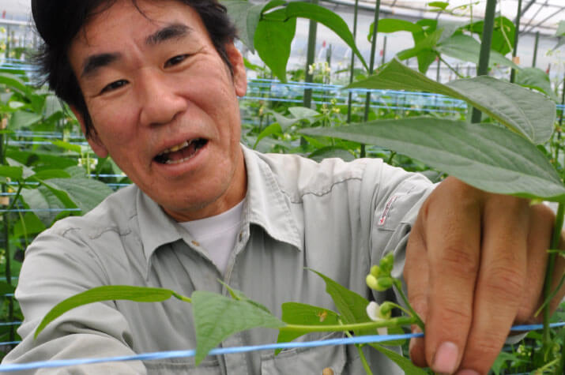

南大隅町の新規就農者の実際の状況を
ケース別に紹介します。
就農の動機や、南大隅での暮らし方など、ライフスタイルは人それぞれです。
町外からやって来て、新しく農業を始めた方の、現在の様子を、ケース別にレポートします！
南大隅町で就農し、
トロピカルフルーツを生産
濵田祐一朗さん（54歳）は、南大隅町の温暖な気候を生かしたトロピカルフルーツの栽培を行っています。前職はサラリーマン。国際協力機構（JICA）などの委託を受け、東南アジア各地を回り、河川防災などの建設コンサルタント業務に携わっていました。日本に戻った濵田さんは、「海外を転々としていたので、できれば1カ所に定住して、じっくり仕事をしたい。」と新しい生き方を模索。
東京から父親が暮らす鹿屋市に戻ってきたのが2009年。しかし、鹿屋は桜島の降灰の影響を受けやすいので、他の場所に定住しようと考えたといいます。最初はねじめ農園で職員募集があり、採用され、定住の足掛かりができました。
「一人でやろうという気持ちはあったけどスキルがなくて、法人に入ったんです」。そこでの栽培は、ネギやサツマイモが主でした。南大隅町に移住して丸7年が過ぎ、ようやく2年前に独立。露地植えのアボカド5アールから生産をスタートしました。その後、耕作放棄地だった畑をビニールハウスごと借り受け、栽培面積を20アールにまで広げました。「最初はビニールハウスの天井まで生い茂った草木を払って、ハウスの基礎をコンクリートで養生するところから始めました。ハウス栽培にアボカドやパイナップル、パッションフルーツを選んだのは、他の人と生産品目が競合しないようにしたかったから。朝は8時ぐらいから、夕方は５時ぐらいまで作業し、天気次第では休みもない根気のいる仕事ですが、組織に属さないのでストレスフリーですよ」と笑います。
今ではゴールドビーチで知られる大浜に自宅も新築。魚釣りが趣味の祐一朗さんの悠々自適な暮らしぶりを見て、弟家族4人も神戸から移住してきました。うれしいことに、一緒に農業に従事しています。鹿屋に住む両親も様子を見にきては草取りや収穫など、祐一朗さんの農作業を手伝ってくれるそうです。
南大隅町には果樹の営農指導員がいて、助言や指導をしてくれる環境が整っています。「町の入植制度などが活用できるので助かっています。アボカドはようやく収入につながるまでになりました。パイナップルは2017年の10月に植えて2018年出荷できましたが、まだまだこれからです」。つなぎになるのが、パッションフルーツ。1年1年お金になるので助かるそう。「アボカドやパイナップルは、農協に出荷し、一部を地元の直売所である「なんたん市場」に出荷しています。営業より作る方に集中しています。収入はサラリーマン時代より大幅に減ったけど、家も建てられたし、ここでの暮らしに満足しています」と生き生きとした表情の祐一朗さんです。

南大隅町役場経済課
(果樹営農指導員)
岩下 恭一さん
濵田さんの就農については、技術指導のほか、南大隅町の農業者入植促進事業という制度でサポートさせていただきました。これは、南大隅町で新たに自立する方を対象に、就農奨励金を交付するという内容で支援を行うものです。そのほか、農協や直売所などの販路の紹介等を行いました。濵田さんの場合は、コンサルタントだったというキャリアの方で、農業への理解も早く、上手に農業をスタートできたケースだと思います。

南大隅町で就農し、
畜産（黒牛）を飼育
2017年4月に南大隅町で肉用牛の飼育を始めた馬場園仁孝さん（28歳）。
「薩摩半島にある実家でも親が黒牛を約20頭飼育しているんですが、周辺の宅地化が進んで規模拡大ができなくて。僕はもっと広い土地で肉用牛の飼育を始めたかったんです」
そこで、県内で使われなくなった牛舎と土地を探し、南大隅町の紹介で見つかったのが現在の施設でした。「母親の実家が南大隅町にあるので、生活の拠点にできると思ったのは確かです」
馬場園さんは、県立市来農芸高校や県立農業大学校で農業や畜産を学び、南九州市にある黒牛の畜産会社に勤めた後、独立しました。
土地や牛の購入代、開業資金として、日本政策金融公庫から青年等就農資金（新たに農業経営を開始する青年を応援する無利子の資金）を借り入れ、事業をスタート。子牛や妊娠牛の購入は、役場の指導員と同業の先輩に、肝属市場で好まれる血統の牛を相談しながら、1年かけて30頭を導入しました。
「鹿屋市にある大きな畜産会社で弟が働いています。学校の先輩たちも大隅半島の各地にいますが、やはり南大隅町で畜産をやっている先輩や役場の人、JAの人たちに指導してもらうことが多いです。購買者がどういう血統の子牛を求めているか、病気の予防はどうするかなどを聞けて、とても助かっています」
持ち前の人懐こさを生かし、情報収集している馬場園さん。事業を始めるときに最長5年間、年間150万円交付される農業次世代人材投資資金を利用しました。
着々と経営力を身に付けており、早期出荷で90万円を超える子牛の販売も経験しましたが、「今は30頭で、エサ代などのコストを考えると、安定して利益を出すには中途半端な状態。早く倍の60頭を飼育できるようになりたい。牛舎拡大の追加融資も受けたいです」と、若さを武器に、前向きに取り組んでいます。
南大隅町役場経済課
(畜産係長)
湊原 裕二さん
馬場園さんの就農は電話相談からスタート。南大隅町にある母親の実家を生活の拠点に、通いで畜産を始めたいというものでした。そこで、町内の遊休施設を紹介して初期投資を抑え、国からの融資を子牛や妊娠牛の導入に当てられるよう指導しました。飼育目標頭数に達し、今後は、分娩等の簡易牛舎が必要です。2019年からは償還が始まるので、早期出荷の指導を行います。前職で技術を得ての就農なので、増頭の助成事業にも助けられながら、事故等もなく順調に営農できています。

南大隅町で就農し、
ハウスで促成ピーマンを生産
ピーマンを生産する成尾 亮さん（38歳）は、28歳でUターン。戻ってすぐは実家の農業の手伝いからスタートし、独立してピーマンの作付を始めてからは3年目です。
国立鹿児島工業高等専門学校では機械工学を専攻し、東京で電子関係の会社に就職した成尾さん。モバイル開発の競争激化で会社が規模縮小に転じたのをきっかけに、早期退職でUターンを決めたといいます。
実家は畜産を中心とした農家で、中学生の頃に手伝った経験もありますが、本格的に就農するとなると話は別。まずは、町の農業者入植促進事業を活用して、1年間月額4万円の就農奨励金を受けました。次に、年間150万円を最長5年間受けられる農業次世代人材投資資金の経営開始型を活用し、2年目になります。
これまでは12アール（1200㎡）のビニールハウスでピーマンを栽培。売上が550〜600万円で、4割強を資材費や運転コストに費やしてきました。2018年11月には桜島降灰対策事業の新しいハウスも完成し、全体で27アールにまで面積を拡大。
栽培のノウハウは、ピーマン部会の先輩に話を聞いたり、ネットで調べたりしながら習得。「11月末の今は糸につるを巻き付ける垂直誘引の作業が主です。暖かくなると1日に数㎝伸びるんです。1人で1日4畝（うね）ぐらい作業できるので、3日あれば一巡できます」と成尾さん。
「今後は、年収で500〜600万円ベースを目指しつつ、父親の畜産と合わせて農業の経営安定を図っていきたいです」。ちなみに、現在は牛25頭を飼っていて、「小規模農家としては多過ぎ、中規模農家としては少ない頭数なので、人を雇い入れながら倍の50頭に増やして事業を拡大していきたい」そう。
促成ピーマンの収穫を楽しみに、農業に情熱を注ぐ力強いファーマーです。


南大隅町で就農し、
ハウスでインゲンを生産
インゲン生産農家の後継者として5年前にUターンした樋之口久孝さん（50歳）。帰郷後しばらくは父親の生産を手伝っていました。自分のハウスを持ってインゲン栽培を始めたのは2年前。まったくの新規就農ではないため、町の農業者入植促進事業の助成金月4万円を利用し、さらに、第1次産業成長化支援事業でトラクターや暖房機購入代金の15％助成を受けました。ハウスは4連棟と3連棟を整備。国と県からの桜島降灰対策事業で整備費の65％を賄い、先ほどの支援事業の15％助成を上乗せして、合計で80％の補助を受けました。
「就農支援制度があるから、始められたんです」と力のこもった言葉は、単純明快にして、ずっしりと重みを伴った響きです。
樋之口さんは、「中学生の頃に暖房インゲンを手伝ったことはあります。でも、電気工学系の大学に進み、中退後に大手企業に就職して、その後は測量専門学校を経て測量コンサルタント会社で10年間働いて、ようやく地元に戻ったので」と農業とはほぼ無縁だったこれまでを振り返ります。
今は、17アールの暖房インゲンを自分の手で生産する喜びはもちろんのこと、「誰かに指図されることがないので、毎日伸び伸びと過ごせます」と田舎暮らしならではのメリットを享受している様子。インゲン栽培の準備が始まるのは9月。畑の土を消毒し、10月にはハウスにビニールをかぶせます。10月半ばに植え付けしてから暖房の準備。一番最初のインゲンの出荷は12月半ばから。年明けには、次に備えて追肥します。
ハウスでの作業は主に1人ですが、両親も手伝いにきてくれるそう。「収穫時は一斉に摘み取らなければならないので2、3人でも追い付きません。この時ばかりは人を頼んでいます」。収穫したインゲンはJAに出荷しています。「値崩れしないので」と樋之口さん。インゲン生産による年収はおおよそ500万円です。繁忙期以外はバレイショや米の生産も行いますが、「今後は、ここの気候に適したパイナップルなど他の作物にも目を向けていきたい」と意欲的です。
南大隅町役場経済課
(野菜営農指導員)
池田 重市さん
南大隅町では温暖な気候を活かした野菜の露地栽培が主体でしたが、たびたび寒波に見舞われるなど、後継者が農業で生計を立てるには苦しい状況でした。そこで、国の支援を利用し、5、6年かけて毎年30アール以上のハウス導入に踏み切りました。2018年はピーマン農家3人がハウスを作り、2019年は暖房インゲン3人が予定しています。ハウス導入に伴い、特産作物としてのめども立ち、新たな就農希望者も出てきました。市場よりも価格が安定するJAとの契約販売などで経営の安定化を指導しています。
南大隅町で就農し、
夫婦で作るパッションフルーツ
安部川京⼦（けいこ）さん（46歳）は、地域おこし協⼒隊として町の施設でアボカドの⽣産に携わるとともに、家では夫の康幸さん（47歳）と⼀緒にパッションフルーツやパイナップルを作っています。
安部川さん夫妻は、神奈川県横浜市のマンションを売却して2019年3⽉末で転出。同年8⽉に南⼤隅町に転⼊するまで、宮崎県、⿅児島県本⼟、種⼦島でもお試し移住を経験。「⼈が温かい、⾏政が親切、移住の受け⼊れ窓⼝も丁寧だったので南⼤隅町を選びました。初めは農業をしようとは考えていませんでしたが、役場で就業相談をしたところ、すぐに借りられる農地があって、指導者もいますよ、とアドバイスをもらいました。夫婦で話し合って、ここならいいじゃん、となったわけです」
移住後すぐに夫・康幸さんは新規就農者、妻・京⼦さんは地域おこし協⼒隊として⽣活をスタートさせました。就農して丸2年がたち、佐多伊座敷に20アールのパッションフルーツ畑、根占川北に9アールのパイナップル畑を持っています。パッションフルーツは5⽉〜8⽉が収穫時期で、これまで2回収穫。1回の出荷量は約3トンです。パイナップルは2年に1回、6⽉〜8⽉に収穫するので、今年が初めての収穫となりました。
「パッションフルーツは、収穫して1個ずつきれいにふいて、重さを計って、これを期間中に4万個ぐらい、ずっと⼿作業でやります。農協には4、5個⼊り300グラムのパックで卸します。昼間は協⼒隊の仕事もあるので、家での作業は深夜に及ぶこともあるんです」と出荷作業はとても⼤変そう。でも、それを喜びに変えてくれるのが、消費者や知り合いから届く「おいしかった」の声。
「ネットショップのサイトに出品して、おいしかったというコメントが返ってきたり、知り合いからおいしかったよ、と⾔われたりすると、やっぱりうれしくて、励みになりますよね」
たまの息抜きは、知り合いが誘ってくれる夜の⾷事会。でも、ほっとしたのも束の間、帰宅後にまた残りの作業が始まることも。パッションフルーツの収穫後は、次に備えての⼟づくり。10⽉には苗を植えます。パイナップルも収穫が終わったら次を植えます。それらが終わったら、ようやく⼼⾝ともにゆっくりできるとか。「砂蒸し⾵呂でのんびりしたいですね」と笑います。
京⼦さんは、「夫の3年間の就農⽀援制度があったから、失敗を恐れずにチャレンジできたのだと思います」と振り返り、3年⽬に向けて明るく前を向きます。
南大隅町で就農し、
Uターンから始まる畜産生活
⽣まれ育った南⼤隅町にUターンして、2021年7⽉から1年間の繁殖⾁⽤⽜飼育研修をスタートさせた野尻野尚仁（のじりの なおと）さん（25歳）。両親が経営している畜産業を継ぐなら今だ、と決意して町の就農者研修制度を利⽤しました。
朝8時、まずは⼦⽜保育から1⽇が始まります。床（とこ）に敷いたノコクズの掃除など、切り返しを⾏います。次に親⽜の発情確認。さらに、廃⽤⽜で⼈⼯授精の訓練。「⼈⼯授精はここに来てからの初めての経験で、上⻑から教わりながら回数を重ねているところです」。午後は親⽜の餌（えさ）やり、分娩舎の餌やり、整理。そして、⼦⽜の餌やりと続きます。
ところで、実家が畜産農家ということは、多少なりとも⾒て学んだ経験があるのではないかと尋ねると、「⼩さい頃は⽜が好きじゃなかったです。特に親⽜が逃げ出すと怖かった」と正直。とはいえ、⿅屋農業⾼校の畜産動物科に進みます。⾼校で野球をしていた縁で、卒業後は枕崎市の「ブルペン」という、枕崎⾼校野球部の監督の実家がやっているお弁当屋さんに就職。約5年間働きました。その後、JA⿅児島県経済連知覧⾁⽤⽜繁殖センターで1年間勤務して、故郷に戻ったという経緯です。
「いつかは親の後を継ぎたいと思っていました。⼦⽜の市場価格が上がっているうちがいいかなと」。しかし、現況は新型コロナ禍の影響で市場価格が前より下がっているのだとか。コロナの収束を願いつつ、研修が明ければ実家で、両親と⼀緒に働けることになります。
現在は、両親が繁殖⽜23頭を飼育。親⽜の餌になる乾草⽤の畑も3町（＝サッカーコートなら4⾯半）ほどあります。「親からは、⾃分が継ぐにはまだまだ⼼配があると⾔われます」と謙遜気味。でも、尚仁さんは中学⽣のとき、マラソンの県⼤会にも選出されたほど、粘り強さを兼ね備えたスポーツマン。しかも、「研修するうちに⽜が好きになりました」と素直に⾔えるようになりました。これから親⼦3⼈で⼒を合わせていくことについては、「⽣き物相⼿なので、なかなか休めないけれど、働いた分だけ規模拡⼤できます。⼦⽜50頭肥育を⽬指して頑張って⾏きたい」と瞳を輝かせます
南大隅町で就農し、
夢に向かって奮闘中！
南⼤隅町花ノ⽊地区で、繁殖雌⽜を飼って⼦⽜を⽣産する仕事に就いたのが、⿅屋市上祓川町（かのやし かみはらいがわちょう）出⾝の⼭⼝愛未（やまぐち あみ）さんと、⼭⼝県岩国市出⾝の内藤あず美（ないとう あずみ）さん。ともに30歳です。
⼆⼈は、それぞれ地元の⾼校を卒業後、福岡県内の専⾨学校で知り合いました。以来ずっと、同じ夢を抱いてルームシェアを続けています。専⾨学校では動物の飼育を学び、卒業後は⼭⼝県内の牧場や動物園などで働きましたが、次第に、「⾃分たちだけで畜産をやりたい」という思いが募り、畜産試験場に勤めるなど、まずは⼭⼝県内での就農を検討しました。
しかし、「せっかく就農するならもっと畜産が盛んな場所にしよう」という話になり、たまたま⼭⼝さんの祖⽗が佐多で兼業農家をして⼩規模ながら⽜も飼っていたことから、南⼤隅町役場に問い合わせをしたそう。
それまでの経験を⽣かしてすぐに研修⽣として受け⼊れてもらえることが分かり、「繁殖⽜だけで⽣計を⽴てていきたい」という⼆⼈は⾨原畜産で研修をスタート。町の⽀援制度で⽣活費をもらいながらの1年間の研修が明け、取材当⽇は偶然にも⼆⼈にとっての初競り⽇で、⿊⽑和⽜の⺟⽜を20頭ずつ、計40頭購⼊したところでした。
「南⼤隅町独⾃の⽀援制度があって良かったです。研修しながら、その⼟地の特徴もつかめたし、⾃分たちで始めるのに、融資⾯でも条件が易しくしてあったので」。実技⾯は慣れていても、経営⾯のサポートを役場の担当者が丁寧に指導してくれ、先輩から学ぶ事も多かったといいます。困ったときは、SNSで相談することもあるそう。「⼭⼝県で学んだ⾎統とは全然違うので、勉強し直しています。市場の評価が違って、⾁質重視の地域もあるけど、この肝属エリアでは、⼤きな⽜が好まれます。⾃分たちの商品価値を⾼めるために勉強を続けます」
休めるのは、⾬の⽇。晴れた⽇は⽥んぼに⼊って⽜にやる草刈りに追われています。今後は、「従業員を雇わずに⾃分たちで⾷べて⾏けるくらいの規模を考えています。がっつり会社にして⼤きく稼ごうという考えはないです」「とにかく、⽜が元気に育ってくれれば」と利益は出しつつも、堅実に。「実績を積んで、5年以内にはそれぞれ30頭ずつ飼えるようになりたい」という夢に向かって突き進む⼆⼈です。
最後に、これからI・Jターンを考えている⼈に向けて、「家の確保に困るんじゃないでしょうか。町営住宅は縛りが厳しいので、空き家バンクを利⽤してみるといいと思いますね」とアドバイス。
南大隅町で就農し、
夫婦でハウスインゲン栽培
インゲンの⽣産を中⼼に、インゲンと繁忙期が重ならないパイナップルやアボカドも⼿掛け、通年の出荷サイクルを上⼿に調整している仲 究（なか きわむ）さん（49歳）と理恵さん（42歳）夫妻。東京都あきる野市から、2019年8⽉に南⼤隅町に移住してきました。
前職の警察官時代に、⽗島に赴任した経験から、「地⽅の暮らしがいいな」と思い、東京で開かれる移住フェアに出掛け、南⼤隅町のブースを訪れたのがきっかけだそう。
「農業は全くの未経験でしたが、移住前に私は3回、妻も2回、宿泊研修で⼩さな農家を⾒て回ることができ、⼆⼈で新規就農を決意しました」
移住後、まずは研修でいろいろな農家の⼿伝いに。ちょうどパイナップル農家の研修のときに、役場の⼈が勧めてくれた試⾷のパイナップルの⽢さにびっくり。「私も作りたい！」と思った、と理恵さん。「パイナップルは1株に1個成り、2年⽬に収穫するので、あまり⼿はかからないです。収穫前は⽔を与えず、糖度を上げます」と究さんも⾃分たちの味に⾃信が持てたよう。
メインで栽培している品種は、「ゴールドダイヤモンド」「ハワイ」「ボゴール（スナックパイン）」の3種類で、「バレル」と「ソフトタッチ」の2種類も少しだけ植えています。「品種が違うと味が全然違います。ゴールドダイヤモンドとボゴールは芯まで⾷べられて酸味が少なく⽢いです。ハワイは外国産に近い味で酸味もありますが、初夏の頃は桃⽸のような⾹りと⽢さがあります。ジュースにするなら、酸味がある⽅がいいようです」と究さん。
パイナップルは川北に5アールの畑を2カ所、インゲンのハウスも川北に7.5アール、アボカドは霜の降りない温暖な辺⽥に19アール持っています。出荷時期はインゲンが12⽉末から5⽉ゴールデンウイーク頃まで、パイナップルが5⽉〜9⽉ぐらい（おいしいのは7・8⽉ごろだそう）、アボカドは早⽣種が 10⽉〜、晩⽣種が翌年2・3⽉ごろまで。通年で出荷作業が途切れることはありません。
⼆⼈は、「⼤変だけど、楽しい」と⼝をそろえます。「害⾍発⽣への対処や、すぐに伸びる雑草の⼿⼊れはもちろん⼤変ですが、精神的なプレッシャーがないですから。夏場はさすがに⽇中は避けて、朝⼣の涼しい時間帯に農作業をします」と究さん。
順⾵の様⼦ですが、「役場や周りの先輩たちの⽀援がなければ、取りかかれなかった」と感謝しています。「指導員が現場に来て、⼟づくりから、種の準備まで細かく教えてくださるし、先輩農家さんが様⼦を⾒に来て、この⽅が早く育つよってアドバイスしてくださるのでどれだけ助かったことか」と振り返ります。「1年⽬は指導通りにやるからうまくいく。2年⽬からは⾃⼰流になりがちなので⼿を抜かないように、と肝に銘じています」と顔を⾒合わせてにっこり。「⾒て学ぶ接点を作ってくださって、本当に良かったです。⾃分たちだけで就農のあいさつをして回るなんてこと、できませんから」
就農を考えはじめている⼈へは、「指導員と先輩の好意には存分に⽢えることですね。変に遠慮すると後で⼤変なので。そのうち、恩返しすればいいと思います」とメッセージ。
⼒仕事が必要だと聞きつけると、「迷惑だろうけど、⾏きます！」と⾔って⼿伝いに。「お茶の時間に、これ、どうでしたっけ？と気軽に聞けるから」と情報交換も楽しいひととき。周りから今年はバレイショの収益率がいいらしいと聞き、「今後は様⼦を⾒ながらバレイショにも挑戦しようかな」と意気揚々。「でも、霜が怖いですよ」と横で⼆⼈を⾒守っていた指導員から釘を刺され、「あっ、調⼦に乗っちゃった」と⼤笑いする仲さん夫妻です。